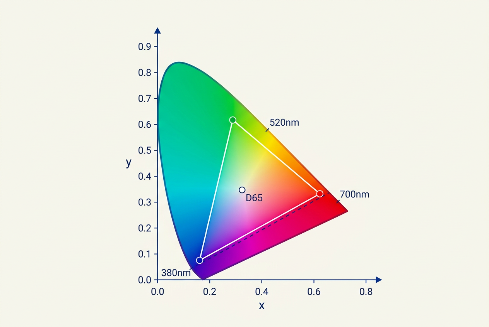

本讲义基于 Steve Marschner & Peter Shirley 所著《虎书》（Fundamentals of Computer Graphics）第5版第18章（p.521-542）颜色。
颜色科学完整体系——三刺激理论、CIE XYZ 色度图、sRGB 编码、CIELAB、von Kries 色适应、CAT02 矩阵、CIECAM02、ICC 渲染意图与色域映射。
本版插画采用 Guizang 材质插画风格重新绘制。
一束光由大量光子组成，每个光子具有特定的波长 λ。光子按不同波长的分布称为光谱（spectrum）。光谱可以理解为以波长为横轴、光子数（或能量）为纵轴的图形。因为两个同波长光子携带的能量是单个光子的两倍，这张图也可以看作能量-波长图。一个典型光谱的例子如图 18.1 所示——它代表平均日光。人类视觉敏感的波长范围大致在 380 到 800 纳米（nm）之间。

在模拟光的传播时，理论上可以为每条光线携带一个完整的光谱——这样的渲染器称为光谱渲染器（spectral renderer）。但从前面的章节可知，我们通常不会构建光谱渲染器，而是用红、绿、蓝三个分量来近似表示颜色。这种做法之所以可行，完全是因为人类视觉的特性——这将在 18.1 节中讨论。
通过追踪光线来模拟光传播可以处理光的物理过程，但需要注意：光的偏振、衍射和干涉等属性并未被这种模型纳入。在物体表面边界，我们通常用反射函数（reflectance function）来建模光的行为。这些函数可以通过测角反射计直接测量得到大量表格化的数据，也可以用各种更紧凑的函数来表示。然而，这些反射函数本质上是经验性的——它们抽象掉了光子被电子吸收和重新发射的化学过程。因此，反射函数对计算机图形学中的建模很有用，但无法解释为什么某些波长的光被吸收而另一些被反射。
我们无法用反射函数来解释为什么香蕉反射的光谱组合在我们看来是"黄色"——那需要研究分子轨道理论，超出了本书的范围。此外，正如我们在本章剩余部分将发现的，我们对颜色的感知比乍看起来要复杂得多。颜色感知随光照变化、随观察者不同而变化，甚至同一个观察者的感知也会随时间改变。
当光到达视网膜时，它被转码为电信号传递到大脑。大脑中有很大一部分区域专门处理视觉信号，其中一部分产生了颜色感知。因此，即使我们知道香蕉反射的光谱，我们仍然不知道为什么人类将其与"黄色"这个词语关联起来。
换句话说，从香蕉发出的光谱是在环境上下文中被感知的。要预测观察者如何感知"香蕉光谱"，需要知道包含香蕉的环境以及观察者所处的环境。在很多情况下两者相同——但当我们在一台显示器上展示香蕉的照片时，这两个环境就不同了。由于人类视觉感知依赖于观察者所在的环境，照片中的香蕉可能与直接看真实香蕉的感知不同。这对我们处理颜色的方式有重大影响，也说明了颜色问题的复杂性。
为了强调人类视觉的核心地位，我们只需看看颜色的正式定义："颜色是视觉感知的一个方面，观察者通过它来区分两个相同大小和形状的无结构视场之间的差异，这种差异可能由相关辐射能量的光谱组成差异引起"（Wyszecki & Stiles, 2000）。本质上，没有人类观察者就没有颜色。
幸运的是，我们对颜色的许多知识可以被量化——这样我们就可以进行计算来校正人类视觉的特性，从而显示出的图像将按照设计者的意图呈现给观察者。本章包含了实现这一目标所需的理论和数学。
色度学（colorimetry）是颜色测量和描述的科学。由于颜色最终是人类的响应，颜色测量应该从人类观察开始。人类视网膜中的光探测器由视杆细胞（rods）和视锥细胞（cones）组成。视杆细胞高度敏感，在低光照条件下发挥作用。在正常光照条件下，视锥细胞处于工作状态，主导人类视觉。视锥细胞有三种类型，它们共同主要负责颜色视觉。
虽然理论上可以直接记录在呈现视觉刺激时锥体的电信号输出，但这样的过程是侵入式的，同时也会忽略观察者之间有时很大的个体差异。此外，颜色测量的许多方法远在这种直接记录技术可用之前就已经发展起来了。
替代方案是通过测量人类对颜色色块的响应来测量颜色，这引出了颜色匹配实验（稍后在本节中描述）。这些实验的结果产生了几个标准化的观察者——可以看作是实际人类观察者的统计近似。不过首先，我们需要描述颜色匹配可能性背后的一些基本假设，这些假设可总结为 Grassmann 定律。
鉴于人类有三种不同的锥体类型，颜色匹配的实验定律可以总结为三色泛化原理（trichromatic generalization）（Wyszecki & Stiles, 2000）：任何颜色刺激都可以用三种适当调制的颜色源通过加法混合来完全匹配。颜色这一特性在实践中被广泛使用——例如，电视和显示器通过为每个像素混合红、绿、蓝光来再现大量不同的颜色。这也是渲染器能够只用三个值来描述每种颜色的原因。
三色泛化原理允许我们在任何给定刺激和另外三种颜色刺激的加法混合之间进行颜色匹配。Hermann Grassmann 第一个描述了颜色匹配遵循的代数规则，它们被称为Grassmann 加法颜色匹配定律（Grassmann, 1853），共四条：
加法律是整个颜色匹配和色度学的基础——它意味着颜色混合是线性的：如果你知道各个分量颜色分别如何匹配，你可以通过加法构造任意混合的匹配。这四条定律共同表明：人类的颜色感知（在颜色匹配的意义上）具有三维的线性向量空间结构。
Grassmann 定律在极高亮度或极高饱和度时会失效——但为什么这种近似线性对图形学已经足够？提示：考虑显示器和打印机的典型工作范围——我们处理的颜色亮度在 0.05–100 cd/m² 之间，远未达到光漂白锥体所需的上万 cd/m²。
每种锥体类型对整个可见范围内的波长都有一定的敏感度，但敏感度的分布不均匀——在某个峰值波长处敏感度最高。三种锥体类型的峰值波长各不相同。它们被分类为 S 锥（短波长）、M 锥（中波长）和 L 锥（长波长），字母表示峰值敏感度在可见光谱中的位置。
给定锥体的响应是其输出电信号的幅值，随入射到锥体上的波长光谱变化。每种锥体类型作为波长 λ 的函数的响应函数记为 L(λ)、M(λ) 和 S(λ)，绘制在图 18.2 中。
对于具有给定光谱组成 Φ(λ) 的刺激，每种锥体类型的实际响应由光谱与锥体敏感度函数的乘积积分给出：
锥体响应的积分公式 —— 将物理光谱映射为三刺激值： L = ∫_λ Φ(λ) · L(λ) dλ M = ∫_λ Φ(λ) · M(λ) dλ S = ∫_λ Φ(λ) · S(λ) dλ 这三个积分结果 (L, M, S) 称为三刺激值（tristimulus values）。
既然三刺激值由两个函数在可见范围内的乘积积分产生，显然人类视觉系统不是简单的波长检测器。相反，我们的光感受器充当近似的线性积分器。因此，可以找到两个不同的光谱组成，比如 Φ₁(λ) 和 Φ₂(λ)，积分后产生相同的响应 (L, M, S)。这种现象称为 metamerism（同色异谱），图 18.3 展示了一个例子。
同色异谱（metamerism）的数学条件 —— 两个不同光谱产生相同锥体响应： Φ₁(λ) ≠ Φ₂(λ)（两个光谱在物理上不同） 但满足三个积分等式： ∫_λ Φ₁(λ)·L(λ) dλ = ∫_λ Φ₂(λ)·L(λ) dλ → L₁ = L₂ ∫_λ Φ₁(λ)·M(λ) dλ = ∫_λ Φ₂(λ)·M(λ) dλ → M₁ = M₂ ∫_λ Φ₁(λ)·S(λ) dλ = ∫_λ Φ₂(λ)·S(λ) dλ → S₁ = S₂ 这意味着视觉系统将无限维的光谱 Φ(λ) 投影到三维子空间 (L, M, S) —— 同色异谱本质上是"降维投影的不可逆性"。
某些鸟类和爬行动物有四种锥体类型（四色视觉）。如果人类也有，显示器和渲染器需要几个颜色通道？三色表示还能工作吗？提示：就像三角形无法覆盖整个马蹄形色度图一样，三维颜色空间只能覆盖四维颜色空间的一个三维子空间。
同色异谱是人类视觉的一个关键特征，它使得颜色再现设备的构造成为可能——包括本书中的彩色插图，以及打印机、电视和显示器上再现的所有内容。
颜色匹配实验也依赖于同色异谱原理。假设我们有三个不同颜色的光源，每个都有一个旋钮来调节其强度。我们称这三个光源为原色（primaries）。我们应该能够调整各自的强度，使得当它们加性混合在一起时，产生的光谱积分出一个与第四个未知光源感知颜色匹配的三刺激值。当我们进行这样的实验时，我们实际上已经将我们的原色匹配到了一个未知颜色。三个旋钮的位置就是这第四个光源颜色的一种表示。
在这个实验中，我们利用了 Grassmann 定律来将三个原色的光谱相加。我们也利用了同色异谱——因为三个原色的组合光谱几乎肯定与第四个光源的光谱不同。然而，从这两个光谱计算出的三刺激值是相同的——它们产生了颜色匹配。
注意：我们实际上不需要知道锥体响应函数就能进行这样的实验。只要我们在相同条件下使用同一个观察者，我们就能匹配颜色并记录每个颜色对应的旋钮位置。然而，每次测量颜色都要做实验是非常不方便的。因此，我们确实想要知道光谱锥体响应函数，并对一组不同观察者的结果取平均来消除个体间差异。
同色异谱就像一首歌的现场演奏和 MP3 录音——它们是完全不同的物理信号（声波 vs 数字编码），但传到耳朵里听起来"一样"。类似地，显示器用三种 LED 的混合光谱来"欺骗"眼睛，让我们以为看到的是真实日光下的连续光谱。这是所有显示技术得以运转的根本原理。
如果我们对大量颜色进行颜色匹配实验，由一组不同的观察者执行，就可以生成一个平均的颜色匹配数据集。特别是，如果我们使用单色光源来匹配我们的原色——对每个可见波长重复这个实验——得到的三刺激值就称为光谱三刺激值，可以相对波长 λ 绘制出来，如图 18.4 所示。
通过使用一组明确定义的原色光源，光谱三刺激值产生三条颜色匹配函数。CIE（国际照明委员会）定义了三原色为 435.8nm、546.1nm 和 700nm 的单色光源。使用这三个单色光源，所有其他可见波长可以通过添加不同量来匹配。匹配给定波长 λ 所需的各原色量编码在颜色匹配函数 r̄(λ)、ḡ(λ) 和 b̄(λ) 中，如图 18.4 所示。与这些颜色匹配函数相关联的三刺激值称为 R、G 和 B。
原色为单色光源 435.8 / 546.1 / 700 nm。注意某些波长的负值——例如在 500nm 附近 r̄(λ) 为负，因为要匹配高饱和度的青色单色光，必须将红色原色"加到被测光一侧"。
由于我们在加光，而光不能为负，你可能注意到了图 18.4 中的一个异常：为某些波长创建匹配需要减去光。虽然不存在"负光"这种东西，我们可以再次利用 Grassmann 定律——与其从原色混合物中减去光，不如将等量的光加到正在被匹配的颜色上。
CIE r̄(λ)、ḡ(λ)、b̄(λ) 颜色匹配函数允许我们判断一个光谱分布 Φ₁ 是否匹配��二个光谱分布 Φ₂——只需比较用这些颜色匹配函数积分得到的三刺激值：
使用 CIE RGB 颜色匹配函数判断两个光谱是否匹配： ∫_λ Φ₁(λ) · r̄(λ) dλ = ∫_λ Φ₂(λ) · r̄(λ) dλ ∫_λ Φ₁(λ) · ḡ(λ) dλ = ∫_λ Φ₂(λ) · ḡ(λ) dλ ∫_λ Φ₁(λ) · b̄(λ) dλ = ∫_λ Φ₂(λ) · b̄(λ) dλ 仅当三个三刺激值分别相等时，才能保证颜色匹配。
如果不同的应用中使用了不同的颜色匹配函数，就需要把一组三刺激值变换为另一组。CIE 定义了一个这样的变换，出于两个具体原因：第一，在 1930 年代数值积分很难进行，特别是对于可正可负的函数；第二，CIE 已经开发了明视觉亮度响应函数 V(λ)。理想情况下应该有三条积分函数，其中 V(λ) 是其中一条，且三条在整个可见范围内都是非负的。
要创建一组全为正的颜色匹配函数，需要定义虚拟原色（imaginary primaries）——要重现可见光谱中的任何颜色，我们需要物理上无法实现的光源。CIE 最终确定的颜色匹配函数命名为 x̄(λ)、ȳ(λ) 和 z̄(λ)，如图 18.5 所示。注意 ȳ(λ) 等于明视觉亮度响应函数 V(λ)，且三条函数确实全部非负。这就是 CIE 1931 标准观察者（CIE 1931 Standard Observer）。
对应的三刺激值称为 X、Y 和 Z，以避免与通常和可实现的物理原色相关联的 R、G、B 三刺激值混淆。从 (R, G, B) 三刺激值到 (X, Y, Z) 三刺激值的转换由一个简单的 3×3 变换定义：
CIE RGB → CIE XYZ 变换矩阵（CIE 1931 标准观察者定义）： [ X ] 1 [ 0.4900 0.3100 0.2000 ] [ R ] [ Y ] = ———————— · [ 0.17697 0.81240 0.01063 ] [ G ] [ Z ] 0.17697 [ 0.0000 0.0100 0.9900 ] [ B ] 其中因子 1/0.17697 ≈ 5.650 为归一化常数（使等能量白点产生 Y=100）。
在实际计算中，我们通常直接用标准观察者颜色匹配函数与目标光谱 Φ(λ) 积分来计算三刺激值，而不是先经过 CIE r̄, ḡ, b̄ 再变换。这使我们能够计算一致的颜色测量并判断两种颜色是否匹配：
CIE XYZ 三刺激值 —— 直接从光谱分布积分：
X = ∫_λ Φ(λ) · x̄(λ) dλ
Y = ∫_λ Φ(λ) · ȳ(λ) dλ
Z = ∫_λ Φ(λ) · z̄(λ) dλ
积分范围通常取 380 nm 到 780 nm，覆盖整个可见光谱。
离散化数值求和形式（采样间隔 Δλ = 5 nm，共 81 个采样点）：
X ≈ Σ_{i=1}^{81} Φ(λ_i) · x̄(λ_i) · Δλ
Y ≈ Σ_{i=1}^{81} Φ(λ_i) · ȳ(λ_i) · Δλ
Z ≈ Σ_{i=1}^{81} Φ(λ_i) · z̄(λ_i) · Δλ
特别地，Y 的物理意义：
Y = k_m · ∫_λ Φ(λ) · V(λ) dλ （明视觉亮度，单位 cd/m²）
其中 k_m = 683 lm/W 为最大光谱光视效能（555 nm 处）
如果 x̄(λ), ȳ(λ), z̄(λ) 直接对应人眼锥体的物理响应，不应该都是单峰吗？x̄(λ) 的双峰结构（主峰约 600nm，次峰约 440nm）来自从 CIE RGB 到 XYZ 的线性变换——将带有负值的 r̄(λ), ḡ(λ), b̄(λ) 映射为全为正的 x̄(λ), ȳ(λ), z̄(λ)。这个数学操作在 x̄(λ) 上留下了双峰的"印记"——XYZ 虚拟原色不对应任何物理光，它们是数学构造。
每一种颜色都可以用一组三个三刺激值 (X, Y, Z) 表示。我们可以定义一个以 X、Y、Z 为轴的正交坐标系，将每种颜色画在三维空间中——这叫做颜色空间（color space）。颜色所占据的体积范围叫做色域（color gamut）。
在三维颜色空间中可视化颜色相当困难。此外，由于 ȳ(λ) 等于 V(λ)，任何颜色的 Y 值对应其亮度。我们可以将三刺激值投影到一个近似包含色度信息（即独立于亮度的信息）的二维空间——这个投影叫做色度图（chromaticity diagram），通过归一化同时消除亮度信息得到：
CIE 1931 色度坐标 (x, y, z) —— 归一化消除亮度： x = X / (X + Y + Z) y = Y / (X + Y + Z) z = Z / (X + Y + Z) = 1 − x − y 由于 x + y + z = 1，z 是冗余的——只需 (x, y) 两个坐标即可描述色度。
虽然仅靠 x 和 y 不能完全描述一种颜色，但我们可以用这两个色度坐标和三个三刺激值之一（传统上使用 Y）来恢复另外两个三刺激值：
从 (x, y, Y) 恢复完整三刺激值： X = (x / y) · Y Z = ((1 − x − y) / y) · Y
将所有单色（光谱）颜色画在色度图中，我们得到一条马蹄形的曲线——这条曲线上的点称为光谱轨迹（spectrum locus），如图 18.6 所示。所有其他（非单色）颜色都落在这条曲线内部的某个点。光谱轨迹从 380nm 紫色端出发，经过蓝、青、绿、黄、橙到红（700-780nm）。
连接马蹄形两端的紫色线（purple line）不代表单色光，而是短波和长波刺激的组合。一个（非单色的）原色可以在所有可见波长上积分，得到 (X, Y, Z) 三刺激值，进而得到 (x, y) 色度坐标——即色度图上的一个点。对两个或更多原色重复这一过程，可以得到色度图上的一组点，它们可以用直线连接起来。这样张成的体积代表这些原色通过加法混合可以再现的颜色范围。三原色系统的例子如图 18.7 所示。
色域图为理解加法颜色混合提供了直观工具。然而，使用色度图时应谨慎。第一，马蹄形内部不应被着色——任何颜色再现系统都有自己的原色，只能再现色度图的某些部分。第二，由于 CIE 颜色匹配函数不代表人类锥体的真实敏感度，色度图上任意两点之间的距离不能很好地指示这些颜色在感知上有多大差异。
色度图上的加法混合定律（几何解释）： 两个颜色 C₁ = (x₁, y₁, Y₁) 和 C₂ = (x₂, y₂, Y₂) 的加法混合 产生的色度坐标 (x_m, y_m) 位于连接 (x₁, y₁) 和 (x₂, y₂) 的直线上： x_m = (x₁·Y₁/y₁ + x₂·Y₂/y₂) / (Y₁/y₁ + Y₂/y₂) y_m = (Y₁ + Y₂) / (Y₁/y₁ + Y₂/y₂) 当 Y₁ = Y₂ 时（等亮度混合），混合点 (x_m, y_m) 正好位于 连接 (x₁, y₁) 和 (x₂, y₂) 的线段中点上。 三原色加法混合的色域 = 三个原色色度点围成的三角形在色度图上的投影
色度图中任意两点连线上的所有颜色都可以通过混合两端得到——因此任何三种原色确定的三角形色域内的所有颜色都可以通过加性混合产生。为什么没有一套 RGB 能覆盖整个马蹄形区域？提示：马蹄形是凸的但外边界是曲线——三角形的凸包无法完全覆盖一个曲线凸形状。Rec. 2020 通过将原色放在光谱轨迹上最大化覆盖率到 76%，但仍是三角形。
把 CIE 色度图想象成一张"颜色国家"的地图。马蹄形边界是"海岸线"——光谱轨迹上每个波长是一个纯色"港口"。中央的 D65 白点是"首都"。任何实际颜色都是这张地图上的一个点——色相由"从首都出发的朝向"决定，饱和度由"离首都多远"决定。不同 RGB 颜色空间只是这张地图上的不同"三角形国土"——没有任何三角形能覆盖整张地图。
为了解决 (x, y) 色度图感知不均匀的问题（至少部分解决），开发了更均匀的色度图。CIE u'v' 色度图提供了感知上更均匀的间距，因此通常优于 (x, y) 色度图。它从 (X, Y, Z) 三刺激值通过不同的归一化公式计算：
CIE u'v' 色度坐标（从 XYZ 直接计算）： u' = 4X / (X + 15Y + 3Z) v' = 9Y / (X + 15Y + 3Z) 也可以从 (x, y) 坐标间接计算： u' = 4x / (−2x + 12y + 3) v' = 9y / (−2x + 12y + 3)
一张 CIE u'v' 色度图如图 18.8 所示。与 CIE (x, y) 色度图相比，u'v' 在感知上更均匀——MacAdam 椭圆在 u'v' 空间中大小差异缩小了约一半。
在实际应用中，讨论颜色需要指定一个参考白点。CIE 定义了多个标准光源：
| 光源 | 描述 | 色温 (K) | x | y | 应用 |
|---|---|---|---|---|---|
| A | 白炽灯（钨丝） | 2856 | 0.4476 | 0.4074 | 室内灯光模拟、色适应 |
| D50 | 地平线日光 | 5000 | 0.3457 | 0.3585 | 印刷行业标准 |
| D65 | 北方天空平均日光 | 6504 | 0.3127 | 0.3290 | sRGB / Web / HDTV |
| E | 等能量白（理论） | 5454 | 0.3333 | 0.3333 | 理论参考 |
D65 参考白点（Y=100 归一化）：X_n=95.047, Y_n=100.000, Z_n=108.883。
如上所述，每种颜色可以用三个数字表示——例如 (X, Y, Z) 三刺激值。但 XYZ 的原色是虚拟的——不可能构建一个设备用三个（全为正的）物理光源来再现可见光谱中的所有颜色。
出于同样原因，在 XYZ 空间中进行图像编码和计算可能不实用。例如，存在大量可能的 XYZ 值并不对���任何物理颜色——这会导致可用存储比特的利用效率低下，并且图像处理后需要更高的比特深度来保持视觉完整性。虽然可以构建捕获设备使其原色接近 CIE XYZ 颜色匹配函数，但硬件和图像处理的成本使其没有吸引力。构建对应 CIE XYZ 的显示设备是不可能的。因此，需要设计其他颜色空间，目标包括：物理可实现性、高效编码、感知均匀性、以及直观的颜色指定。
CIE XYZ 颜色空间仍然被广泛使用，主要用作其他颜色空间之间的转换中介。它可以被看作设备无关的颜色空间。其他颜色空间可以通过它们与 CIE XYZ 的关系来定义——通常由一个特定的变换指定。例如，线性和加性的三色显示设备可以通过一个简单的 3×3 矩阵与 CIE XYZ 相互转换。还可能指定一些非线性附加变换——例如为了在有限比特深度存储数据时最小化感知误差，或者为了在输入信号和发光量之间具有非线性关系的设备上直接显示。
对于一个具有红、绿、蓝三原色的显示设备，我们可以通过发送颜色向量 (1,0,0)、(0,1,0) 和 (0,0,1) 来测量发出光的光谱组成——即分别单独点亮每个原色。从测得的光谱输出中，可以计算出对应的色度坐标 (x_R, y_R)、(x_G, y_G) 和 (x_B, y_B)。
显示器的白点定义为发送颜色向量 (1,1,1)（三个原色全亮）时发出的光谱，其对应的色度坐标为 (x_W, y_W)。三个原色的色度坐标和白点的色度坐标共同刻画了显示器的色彩特性，是构造显示器颜色空间与 CIE XYZ 之间变换矩阵所需的四个参数。
这四个色度坐标可以扩展为色度三元组——通过 z = 1−x−y 重构 z 坐标，得到 (x_R, y_R, z_R)、(x_G, y_G, z_G)、(x_B, y_B, z_B) 和 (x_W, y_W, z_W)。如果我们已知白点的最大亮度，就可以计算出其对应的三刺激值 (X_W, Y_W, Z_W)，然后求解以下方程组，得到亮度比率标量 S_R、S_G 和 S_B：
构造 RGB→XYZ 矩阵 —— 求解亮度比率标量 S_R, S_G, S_B：
白点条件（当 R=G=B=1 时输出应为白点）：
X_W = x_R · S_R + x_G · S_G + x_B · S_B
Y_W = y_R · S_R + y_G · S_G + y_B · S_B
Z_W = z_R · S_R + z_G · S_G + z_B · S_B
通常归一化为 Y_W = 1（相对亮度）。解出 S_R, S_G, S_B 后：
RGB → XYZ 变换矩阵 M：
[ x_R·S_R x_G·S_G x_B·S_B ]
M = [ y_R·S_R y_G·S_G y_B·S_B ]
[ z_R·S_R z_G·S_G z_B·S_B ]
给定任意 RGB 颜色，其亮度为矩阵中间行与 RGB 向量的内积：
Y = y_R·S_R·R + y_G·S_G·G + y_B·S_B·B
要在一个给定设备的 RGB 和 XYZ 之间相互转换，只需对上述矩阵求逆。
如果图像表示在一个原色和白点未知的 RGB 颜色空间中，最好的做法是假定图像按照 ITU-R BT.709 标准编码——这个标准用于 HDTV 的编码和广播。其原色和白点见表 18.1。注意 sRGB 颜色空间使用完全相同的原色和白点。
| 原色 / 白点 | x | y |
|---|---|---|
| 红原色 (R) | 0.6400 | 0.3300 |
| 绿原色 (G) | 0.3000 | 0.6000 |
| 蓝原色 (B) | 0.1500 | 0.0600 |
| 白点 (W) | 0.3127 | 0.3290 |
表 18.1 ITU-R BT.709（及 sRGB）的原色和白点色度坐标。
这个 RGB 颜色空间与 CIE XYZ 之间的变换矩阵为：
BT.709 / sRGB 的完整矩阵对 —— 由表 18.1 的原色和白点导出：
已知：原色色度 (x_R,y_R)=(0.6400,0.3300) → z_R=0.0300
(x_G,y_G)=(0.3000,0.6000) → z_G=0.1000
(x_B,y_B)=(0.1500,0.0600) → z_B=0.7900
白点 (x_W,y_W,z_W)=(0.3127,0.3290,0.3583)
解出缩放因子：S_R ≈ 0.6445, S_G ≈ 1.1919, S_B ≈ 1.2033
代入矩阵 M(i,j) = chromaticity_i(j) × S_i 得到：
BT.709 / sRGB 线性 RGB → CIE XYZ： [ X ] [ 0.4124 0.3576 0.1805 ] [ R ] [ Y ] = [ 0.2126 0.7152 0.0722 ] [ G ] [ Z ] [ 0.0193 0.1192 0.9505 ] [ B ] CIE XYZ → 线性 RGB（逆矩阵）： [ R ] [ 3.2405 −1.5371 −0.4985 ] [ X ] [ G ] = [ −0.9693 1.8706 0.0416 ] [ Y ] [ B ] [ 0.0556 −0.2040 1.0572 ] [ Z ]
通过代入设备的最大 RGB 值，可以计算白点。对于 ITU-R BT.709，最大值为 (R_W, G_W, B_W) = (100, 100, 100)，得到白点 (X_W, Y_W, Z_W) = (95.05, 100.00, 108.90)。
通用 RGB 亮度公式（从线性 RGB 计算 Y 值）—— 各种 RGB 空间的相对亮度： BT.709/sRGB： Y = 0.2126·R + 0.7152·G + 0.0722·B Adobe RGB (1998)： Y = 0.2974·R + 0.6273·G + 0.0753·B DCI-P3： Y = 0.2290·R + 0.6917·G + 0.0793·B BT.2020： Y = 0.2627·R + 0.6780·G + 0.0593·B NTSC 1953： Y = 0.2989·R + 0.5866·G + 0.1145·B 注意各空间中绿色通道对亮度的贡献（G 系数）差异显著—— 从 NTSC 的 58.66% 到 DCI-P3 的 69.17%，这反映了不同绿色原色的光谱位置。
除了线性变换外，sRGB 颜色空间还包含一个后续的非线性变换。非线性编码为：
sRGB 非线性编码（线性 → sRGB 数字值）： 当 R > 0.0031308 时：RsRGB = 1.055 · R^(1/2.4) − 0.055 当 R ≤ 0.0031308 时：RsRGB = 12.92 · R 当 G > 0.0031308 时：GsRGB = 1.055 · G^(1/2.4) − 0.055 当 G ≤ 0.0031308 时：GsRGB = 12.92 · G 当 B > 0.0031308 时：BsRGB = 1.055 · B^(1/2.4) − 0.055 当 B ≤ 0.0031308 时：BsRGB = 12.92 · B 解码（sRGB → 线性）： 当 RsRGB > 0.04045 时：R = ((RsRGB + 0.055) / 1.055)^(2.4) 当 RsRGB ≤ 0.04045 时：R = RsRGB / 12.92（G、B 同理） 其中分界点满足 C¹ 连续性： 0.0031308 ≈ (0.04045 / 12.92)，0.04045 = 1.055 × (0.0031308)^(1/2.4) − 0.055
这种非线性编码有助于最小化数字应用中量化误差带来的感知误差。
sRGB 编码/解码的感知意义 —— 量化步长的视觉均匀性： 8-bit sRGB 编码值的感知亮度对应关系（D65 白点归一化）： sRGB = 0 (0/255) → Y/Y_n = 0.00000 → L* = 0 （纯黑） sRGB = 0.25 (64/255) → Y/Y_n = 0.05088 → L* = 27 （暗灰） sRGB = 0.50 (128/255) → Y/Y_n = 0.21404 → L* = 53 （中灰） sRGB = 0.75 (191/255) → Y/Y_n = 0.52199 → L* = 77 （亮灰） sRGB = 1.0 (255/255) → Y/Y_n = 1.00000 → L* = 100 （纯白） 关键观察：sRGB 编码值 128/255 = 0.5 在线性空间中仅对应 21.4% 的亮度—— 伽马编码将暗区展开、亮区压缩，使 8-bit 的 256 个级别 在感知 L* 尺度上近似均匀分布（而非线性 Y 尺度）。
纯幂函数在零点导数为零——极暗区域编码精度极差。线性段（斜率 12.92）替换零附近的行为保证暗区有足够的编码精度。γ=2.4（而非 2.2）更接近 CRT 显示器的固有电光转换特性（约 γ=2.5）。偏移 0.055 使分段点在函数值和一阶导数上都连续。
由于每个设备通常有自己的一套原色和白点，与之关联的 RGB 颜色空间称为设备相关的。即使所有这些设备都在 RGB 空间中运作，它们可能有非常不同的原色和白点。如果一张图像在某个未知的 RGB 空间中指定，根据显示它的设备不同，它可能看起来非常不同——这种情况显然是不可接受的，根源在于缺乏颜色管理。
然而，如果图像在已知的 RGB 颜色空间中指定，它可以先转换到设备无关的 XYZ 空间，然后再转换到目标显示设备的 RGB 空间。有几个定义明确的 RGB 颜色空间，它们各自都由一个线性矩阵变换加上一个非线性变换组成，类似于前述的 sRGB 颜色空间。非线性变换可以用以下参数化形式统一表示：
通用 RGB 非线性编码（参数化形式）： 当 t < C ≤ 1 时：C_nonlinear = (1+f) · C^γ − f 当 0 ≤ C ≤ t 时：C_nonlinear = s · C 其中 C 代表 R、G 或 B 分量（线性值，范围为 [0,1]） 参数 s, f, t, γ 随不同 RGB 颜色空间而异
参数 s、f、t 和 γ，连同原色色度坐标和白点，共同指定了一类在各种工业中使用的 RGB 颜色空间。几种常见的变换详见表 18.2。
| 颜色空间 | γ | f | s | t | 原色特点 |
|---|---|---|---|---|---|
| sRGB | 1/2.4≈0.42 | 0.055 | 12.92 | 0.0031308 | BT.709 原色，D65 白点 |
| Adobe RGB (1998) | 1/(2+51/256) | N/A | N/A | N/A | 纯 γ≈2.2 幂函数；广色域（绿原色 y=0.71 vs sRGB y=0.60） |
| DCI-P3 | 1/2.6≈0.385 | N/A | N/A | N/A | 纯 γ=2.6；数字影院标准，色域比 sRGB 大 25% |
| BT.2020 | N/A（线性） | 0.0993 | 4.5 | 0.0181 | 超宽色域；原色位于光谱轨迹上（单色） |
| HDTV (HD-CIF) | 0.45 | 0.099 | 4.5 | 0.018 | BT.709 编码标准 |
| NTSC (1953) / BT.601-4 | 0.45 | 0.099 | 4.5 | 0.018 | 传统标清电视 |
| PAL / SECAM | 0.45 | 0.099 | 4.5 | 0.018 | 欧洲标清电视标准 |
| SMPTE-C | 0.45 | 0.099 | 4.5 | 0.018 | 美国标清电视标准 |
| SMPTE-240M | 0.45 | 0.1115 | 4.0 | 0.0228 | 早期 HDTV 制作标准 |
| Wide Gamut | N/A | N/A | N/A | N/A | 纯线性（无伽马编码），超宽色域 |
| ACEScg | N/A | N/A | N/A | N/A | 纯线性，电影 VFX 工作流标准 |
表 18.2 标准 RGB 颜色空间的非线性变换参数（数据来源：Pascale, 2003，补充 DCI-P3/BT.2020/ACEScg）。
DCI-P3 是数字影院倡议（Digital Cinema Initiatives）定义的颜色空间，广泛应用于数字电影放映和现代消费电子设备（如 Apple Display P3）。其原色和白点色度如下：
| 原色 / 白点 | x | y |
|---|---|---|
| 红原色 (R) | 0.680 | 0.320 |
| 绿原色 (G) | 0.265 | 0.690 |
| 蓝原色 (B) | 0.150 | 0.060 |
| 白点 (W) — D65 | 0.3127 | 0.3290 |
DCI-P3 线性 RGB → CIE XYZ（D65 白点）： [ X ] [ 0.4866 0.2657 0.1982 ] [ R ] [ Y ] = [ 0.2290 0.6917 0.0793 ] [ G ] [ Z ] [ 0.0000 0.0451 1.0439 ] [ B ] CIE XYZ → DCI-P3 线性 RGB（逆矩阵）： [ R ] [ 2.4935 −0.9314 −0.4027 ] [ X ] [ G ] = [ −0.8295 1.7627 0.0236 ] [ Y ] [ B ] [ 0.0358 −0.0762 0.9576 ] [ Z ] DCI-P3 非线性编码使用纯幂函数： R_DCI = R^(1/2.6), G_DCI = G^(1/2.6), B_DCI = B^(1/2.6) （不同于 sRGB 的分段函数，DCI-P3 不使用线性段）
Adobe RGB (1998) 是为专业摄影和打印工作流设计的广色域 RGB 空间。其绿原色远超 sRGB（y=0.71 vs y=0.60），使其在青-绿色域的再现能力显著增强：
| 原色 / 白点 | x | y |
|---|---|---|
| 红原色 (R) | 0.6400 | 0.3300 |
| 绿原色 (G) | 0.2100 | 0.7100 |
| 蓝原色 (B) | 0.1500 | 0.0600 |
| 白点 (W) — D65 | 0.3127 | 0.3290 |
Adobe RGB (1998) 线性 RGB → CIE XYZ（D65 白点）： [ X ] [ 0.5767 0.1856 0.1882 ] [ R ] [ Y ] = [ 0.2974 0.6273 0.0753 ] [ G ] [ Z ] [ 0.0270 0.0707 0.9911 ] [ B ] CIE XYZ → Adobe RGB 线性（逆矩阵）： [ R ] [ 2.0414 −0.5649 −0.3447 ] [ X ] [ G ] = [ −0.9693 1.8760 0.0416 ] [ Y ] [ B ] [ 0.0134 −0.1184 1.0154 ] [ Z ] Adobe RGB 非线性编码使用纯幂函数：γ = 1/(2 + 51/256) ≈ 1/2.2 R_Adobe = R^(1/2.2), G_Adobe = G^(1/2.2), B_Adobe = B^(1/2.2) （无线性段——通常用于 16-bit 工作流，暗区精度非瓶颈）
ITU-R BT.2020 是为超高清电视（UHDTV / 4K / 8K）定义的颜色空间。其原色位于光谱轨迹上（单色光），实现了极其宽广的色域——覆盖 CIE 1931 马蹄形的约 76%：
| 原色 / 白点 | x | y | 波长 |
|---|---|---|---|
| 红原色 (R) | 0.708 | 0.292 | 630 nm（单色） |
| 绿原色 (G) | 0.170 | 0.797 | 532 nm（单色） |
| 蓝原色 (B) | 0.131 | 0.046 | 467 nm（单色） |
| 白点 (W) — D65 | 0.3127 | 0.3290 | — |
BT.2020 线性 RGB → CIE XYZ（D65 白点）： [ X ] [ 0.6370 0.1446 0.1689 ] [ R ] [ Y ] = [ 0.2627 0.6780 0.0593 ] [ G ] [ Z ] [ 0.0000 0.0281 1.0610 ] [ B ] CIE XYZ → BT.2020 线性 RGB（逆矩阵）： [ R ] [ 1.7167 −0.3557 −0.2534 ] [ X ] [ G ] = [ −0.6667 1.6165 0.0158 ] [ Y ] [ B ] [ 0.0176 −0.0428 0.9421 ] [ Z ]
BT.2020 非线性编码 —— 支持 HDR（高动态范围）的两种标准：
HLG（Hybrid Log-Gamma，混合对数伽马）：
当 0 ≤ E ≤ 1 时：E' = sqrt(3·E) 的近似
当 E > 1 时：E' = a·ln(12·E − b) + c（对数段，适合高亮度）
（a, b, c 为与参考白和峰值亮度相关的拟合参数）
PQ（Perceptual Quantizer，ST.2084，感知量化器）：
E' = ((c₁ + c₂·E^m₁) / (1 + c₃·E^m₁))^m₂
其中 m₁ = 0.1593, m₂ = 78.84
c₁ = 0.8359, c₂ = 18.85, c₃ = 18.69
PQ 支持 0 到 10,000 cd/m² 的绝对亮度编码，基于 Barten 对比度敏感度模型
任意 XYZ → 目标 RGB 的完整转换管线：
步骤 1：XYZ → 线性 RGB（3×3 逆矩阵，以 sRGB 为例）
[R_lin, G_lin, B_lin]ᵀ = M⁻¹_RGB · [X, Y, Z]ᵀ
步骤 2：裁剪色域外值
R = clamp(R_lin, 0, 1), G = clamp(G_lin, 0, 1), B = clamp(B_lin, 0, 1)
步骤 3：编码非线性（逐通道，取决于色域标准）
对 sRGB：应用分段函数（γ=2.4 + 线性段）
对 Adobe RGB：应用纯幂函数 γ = 1/2.2
步骤 4：量化为整数表示
C_int = round(2^b − 1) · C_encoded)
其中 b = 每通道比特深度（8 / 10 / 12 / 16）
BT.2020 将绿色原色放在光谱轨迹上（532nm 单色光），实现了 76% 的 CIE 1931 覆盖率。为什么不能到 100%？为什么单色原色仍不足以覆盖整个马蹄形？提示：从原色三角形→色域凸包的几何约束思考——三角形永远无法完美填充一个曲线凸形状。要在人眼可视的色度图上实现 100% 覆盖，需要至少四个原色（多原色显示），或原色位于光谱轨迹外部（虚拟原色——物理上不可能）。
线性着色计算使用线性 RGB；存储和显示使用 sRGB 编码。将 sRGB 图像不经线性化就在两个图像之间做 alpha 混合会产生暗化伪影——因为 sRGB 空间中 0.5 + 0.5 ≠ 1.0 在线性空间中对应的值。正确管线：纹理采样(解码→线性) → 着色计算(线性) → 输出编码(sRGB)。
前面讨论的锥体信号可以用 CIE XYZ 颜色空间来表示。将 XYZ 转换为 LMS 锥体响应以及反向转换的矩阵变换称为 Hunt-Pointer-Estevez 变换（Hunt, 2004）：
XYZ → LMS（Hunt-Pointer-Estevez 变换）： [ L ] [ 0.38971 −0.22981 0.00000 ] [ X ] [ M ] = [ 0.68898 1.18340 0.00000 ] [ Y ] [ S ] [ −0.07868 0.04641 1.00000 ] [ Z ] LMS → XYZ（逆变换）： [ X ] [ 1.91019 −1.11214 0.20195 ] [ L ] [ Y ] = [ 0.37095 0.62905 0.00000 ] [ M ] [ Z ] [ 0.00000 0.00000 1.00000 ] [ S ]
这一变换被广泛用于色适应变换和色貌建模中。它是连接物理测量（XYZ）和人类视觉生理（锥体响应）的数学桥梁。
XYZ → LMS → CIELAB 的级联变换（完整流水线 —— 从物理测量到��知均匀空间）： 步骤 1：XYZ → LMS（Hunt-Pointer-Estevez 锥体空间） [L, M, S]ᵀ = M_HPE · [X, Y, Z]ᵀ 步骤 2：适应白也进入 LMS 空间 [L_n, M_n, S_n]ᵀ = M_HPE · [X_n, Y_n, Z_n]ᵀ 步骤 3：适应白归一化（von Kries 风格） L' = L / L_n, M' = M / M_n, S' = S / S_n 步骤 4（可选）：转换回"修正"的 XYZ [X', Y', Z']ᵀ = M⁻¹_HPE · [L', M', S']ᵀ 步骤 5：应用 CIELAB 变换 L* = 116·f(Y'/Y_n) − 16 a* = 500·(f(X'/X_n) − f(Y'/Y_n)) b* = 200·(f(Y'/Y_n) − f(Z'/Z_n)) 其中 f(r) 的 C¹ 连续性确保： f'(0.008856⁺) = f'(0.008856⁻) = 1/(3·(6/29)^2) ≈ 7.787 f(0.008856⁺) = f(0.008856⁻) = 6/29 ≈ 0.2069
对手色空间（color opponent spaces）的特征是有一个无彩通道（亮度通道）以及两个编码颜色对抗性的通道——通常是红-绿通道和黄-蓝通道。这些对抗通道在一个轴上编码了两种色度，轴上的值可正可负。例如，红-绿通道正值编码红色，负值编码绿色。零值编码一种特殊情况：中性——既非红也非绿。黄-蓝通道的工作方式类似。
由于每个色度轴上至少编码了两种颜色，不可能同时编码红色和绿色的混合——也不可能同时编码黄色和蓝色。虽然这看似缺点，但已知人类视觉系统在视觉通路的早期阶段就计算了类似属性。因此，人类无法感知同时是红色和绿色的颜色，也无法感知同时是黄色和蓝色的颜色。我们看不到任何像"红化绿"或"黄化蓝"的东西。然而，我们能够感知跨色度通道的颜色混合——如黄化红（橙色）或绿化蓝。
计算机图形学中最相关的对手色系统是 CIE 1976 L*a*b* 颜色模型（也叫 CIELAB）。它是一个感知上大致均匀的颜色空间，尤其用于计算颜色差异。
CIELAB 的输入包括刺激的 (X, Y, Z) 三刺激值，以及在已知光源照射下的漫反射白色表面的三刺激值 (X_n, Y_n, Z_n)。CIELAB 因此超越了普通的颜色空间——它将一个颜色块放在已知光照的上下文中考虑，可以看作一个初级的色貌空间。
CIELAB 定义了三个通道：L* 编码颜色的明度——感知到的反射率；a* �� b* 是对抗色度通道。XYZ 到 CIELAB 的变换可以写成矩阵-向量形式：
CIE XYZ → CIE L*a*b*（CIELAB）转换 —— 矩阵-向量形式：
[ L* ] [ 0 116 0 −16 ] [ f(X/X_n) ]
[ a* ] = [ 500 −500 0 0 ] [ f(Y/Y_n) ]
[ b* ] [ 0 200 −200 0 ] [ f(Z/Z_n) ]
[ 1 ]
其中辅助函数 f(r) 为分段函数：
当 r > 0.008856 时：f(r) = r^(1/3)
当 r ≤ 0.008856 时：f(r) = 7.787 · r + 16/116
分界点：r = 0.008856 = (6/29)^3
7.787 = 1/(3·(6/29)^2)，确保函数在分界点处 C¹ 连续
(X_n, Y_n, Z_n) = 参考白点的 XYZ 三刺激值
标准 D65: X_n=95.047, Y_n=100.000, Z_n=108.883
标准 D50: X_n=96.422, Y_n=100.000, Z_n=82.521
从以上公式可以看出，色度通道确实依赖于亮度 Y。虽然这感知上是准确的，但意味着我们不能把 a* 和 b* 的值画在色度图中。L* 明度在黑（0）和白（100）之间归一化。尽管 a* 和 b* 通道没有被显式约束，它们通常落在 [−128, 128] 范围内。
由于 CIELAB 是近似感知线性的，我们可以取两个颜色，将它们转换到 CIELAB，然后通过计算欧几里得距离来估计感知色差。这引出了 ΔE*ab 色差公式：
ΔE*ab 色差公式（CIELAB 1976）： ΔE*ab = sqrt( (ΔL*)² + (Δa*)² + (Δb*)² ) 其中：ΔL* = L*₁ − L*₂, Δa* = a*₁ − a*₂, Δb* = b*₁ − b*₂ 字母 E 代表"感觉差异"（德语 Empfindung）（Judd, 1932） ΔE* ≈ 1 对应人眼刚好能分辨的差异（JND, Just Noticeable Difference）
最后，CIELAB 到 XYZ 的逆变换为：
CIELAB → CIE XYZ（逆变换）： 当 L* > 7.9996 时： X = X_n · (L*/116 + a*/500 + 16/116)^3 Y = Y_n · (L*/116 + 16/116)^3 Z = Z_n · (L*/116 − b*/200 + 16/116)^3 当 L* ≤ 7.9996 时： X = X_n · (1/7.787) · (L*/116 + a*/500) Y = Y_n · (1/7.787) · (L*/116) Z = Z_n · (1/7.787) · (L*/116 − b*/200) 分界点 L* = 7.9996 对应 r = (6/29)^3 ≈ 0.008856
在某些应用中，使用 CIELAB 的极坐标形式更方便。L*（明度）保持不变，但 a* 和 b* 被转换为色度 C* 和色相角 H°：
CIE L*C*H°（CIELAB 极坐标形式）： C* = sqrt(a*² + b*²) （色度 Chroma —— 距中性轴的径向距离） H° = atan2(b*, a*) （色相角，0°=红轴(+a*), 90°=黄轴(+b*)） 逆变换： a* = C* · cos(H°) b* = C* · sin(H°)
L*C*H° 在概念上类似于 HSV/HSL，但基于真实感知——色度 C* 是感知饱和度的定量度量，色相角 H° 具有真实的视觉含义。
虽然不是基于感知的标准颜色空间，HSV（Hue-Saturation-Value，色相-饱和度-明度）和 HSL（Hue-Saturation-Lightness，色相-饱和度-亮度）在计算机图形学中被广泛用于颜色选取界面和直观的颜色调整。它们将 RGB 立方体重新参数化为圆柱/六棱锥坐标系：
HSV 六棱锥模型 —— 从线性 RGB 转换（R, G, B ∈ [0, 1]）：
V = max(R, G, B) （明度 Value）
S = (V − min(R, G, B)) / V （饱和度，V > 0 时）
= 0 （V = 0 时纯黑）
H = 0° （S = 0 时无定义，无色相）
= 60° · (G − B) / (V − min) （V = R 时）
= 60° · (2 + (B − R) / (V − min)) （V = G 时）
= 60° · (4 + (R − G) / (V − min)) （V = B 时）
若 H < 0，则 H = H + 360°
HSL 双六棱锥模型 —— 与 HSV 的区别在明度轴定义：
L = (max(R, G, B) + min(R, G, B)) / 2 （亮度 Lightness）
S_HSL = (max − min) / (1 − |2L − 1|) （当 L ≠ 0, L ≠ 1 时）
= 0 （当 L = 0 或 L = 1 时）
H_HSL = 与 HSV 色相角公式相同（仅饱和度定义不同）
HSV 的几何直观：V 轴对应 RGB 立方体的主对角线（从黑到白），绕 V 轴旋转对应色相变化，径向距离对应饱和度。模型整体是一个六棱锥（hexcone）——底部六边形（V=1 平面，白顶）收缩到 V=0（黑尖）。HSL 是双六棱锥——顶部白点对应 L=1，底部黑点对应 L=0，中间 L=0.5 时饱和度最大。
HSV 的等色相面是三角形而非扇形——因为 RGB 立方体到六棱锥的变换在几何上是正六边形投影。在 V=max(R,G,B) 的约束下，等 V 面是投影到六边形的截面。圆柱模型（如 HSL 的某些变体）简化了数学但不精确——真正的 RGB→HSV 变换产生的是六边形饱和度边界（如纯黄 S=1 处 R=1, G=1, B=0，纯蓝 S=1 处 R=0, G=0, B=1——在六边形的不同顶点）。
由于 ΔE*ab 在某些颜色区域（特别是蓝色区域和高彩度区域）的感知均匀性不完美，CIE 于 2000 年推出了改进的色差公式 ΔE*₀₀（CIEDE2000），加入了对亮度、彩度和色相三方面的独立校正：
ΔE*₀₀ 色差公式（CIEDE2000）：
ΔE*₀₀ = sqrt[ (ΔL'/(k_L·S_L))² + (ΔC'/(k_C·S_C))² + (ΔH'/(k_H·S_H))²
+ R_T · (ΔC'/(k_C·S_C)) · (ΔH'/(k_H·S_H)) ]
其中：
ΔL' = L*₂ − L*₁ （明度差）
ΔC' = C'₂ − C'₁ （彩度差，在修正后的 a' 空间中计算）
ΔH' = 2·sqrt(C'₁·C'₂)·sin(Δh'/2) （色相差，使用修正色相角差 Δh'）
S_L, S_C, S_H = 亮度/彩度/色相权重函数
（依赖于平均 L*, C*, h° 的值）
R_T = 旋转项（rotation term）
= −sin(2·Δθ) · R_C
= 用于校正蓝色区域（270° 附近）的色相-彩度交互
k_L, k_C, k_H = 应用相关参数因子（通常取 1）
CIEDE2000 权重函数 —— S_L, S_C, S_H 的完整形式：
S_L = 1 + 0.015·(L̄' − 50)² / sqrt(20 + (L̄' − 50)²)
S_C = 1 + 0.045 · C̄'
S_H = 1 + 0.015 · C̄' · T
其中 L̄' = (L*₁ + L*₂)/2（平均明度）
C̄' = (C'₁ + C'₂)/2（平均修正彩度）
T = 1 − 0.17·cos(h̄' − 30°) + 0.24·cos(2h̄')
+ 0.32·cos(3h̄' + 6°) − 0.20·cos(4h̄' − 63°)
R_T（旋转项）的完整形式：
R_T = −sin(2·Δθ) · R_C
Δθ = 30° · exp(−((h̄' − 275°) / 25)²)
R_C = 2 · sqrt(C̄'^7 / (C̄'^7 + 25^7))
R_T 项仅在蓝色区域（h̄' ≈ 270°）显著非零，
校正了 CIELAB 中蓝色色差的感知低估。
CIELAB（1976，3变量）→ CIE94（增加 S_C, S_H）→ CIEDE2000（增加 S_L, R_T, 色相角依赖校正）。每一步增加更复杂的校正来弥补前一步的不足。为什么完美的全局感知均匀距离可能永远不存在？提示：色觉涉及多个生理阶段（锥体吸收→拮抗编码→皮层处理），每个阶段都有独立的非线性。试图用单一欧几里得距离覆盖所有这些非线性在数学上不可能精确——且个体之间颜色感知本身就存在差异。
刚刚描述的 CIELAB 颜色空间不仅需要刺激的三刺激值，还需要白色漫反射光的三刺激值作为输入。因此，它形成了一个将观察环境纳入考虑的系统的开端。
我们观察物体和图像的环境对我们感知这些物体的方式有着巨大影响。我们在日常生活中遇到的环境范围非常大——从阳光到星光，从烛光到荧光灯。光照条件不仅在光的数量上构成非常大的范围，而且在发出光的颜色上也变化巨大。
人类视觉系统通过一个叫做适应（adaptation）的过程来适应环境中的这些变化。可以区分三种不同类型的适应：
人类视觉系统有效地归一化了观看条件，以呈现一个相当一致的视觉体验。我们因此展现出一定量的色彩恒常性（color constancy）：尽管光照变化，物体的反射率看起来相对恒定。图 18.9 展示了一系列在 CIE u'v' 色度图中的光源——一张白纸被其中任何一个光源照亮，都维持白色的外观。
虽然我们能在很大程度上忽略观看环境的变化，但我们不能完全做到。例如，阳光明媚的日子颜色比阴天鲜艳得多。虽然外观发生了变化，我们并不假定物体的物理反射率本身发生了变化——我们理解光照条件影响了整体色彩外观。
色适应前后锥体增益变化的定量描述： 相对锥体增益（White-point-normalized gain）： g_L = L_w,adapted / L_w,reference （L 锥增益） g_M = M_w,adapted / M_w,reference （M 锥增益） g_S = S_w,adapted / S_w,reference （S 锥增益） 当 g = 1 时：该锥体通道不需要调整（光源白点与此通道匹配） 当 g > 1 时：该锥体通道需要更高增益（光源在此波段较弱→提高敏感度补偿） 当 g < 1 时：该锥体通道需要降低增益（光源在此波段较强→降低敏感度避免饱和） 典型场景（A 光源→D65）： g_L = 14.06/19.84 = 0.71 → 红色敏感度"降温"约 29% g_M = 183.83/194.01 = 0.95 → 绿色几乎不需要调整 g_S = 106.04/31.58 = 3.36 → 蓝色敏感度"升温"约 236%
然而，色彩恒常性确实适用于色度内容。色适应使白色物体在大量光照条件下都能呈现为白色。
色彩恒常性的数学条件 —— 反射率不变性在 von Kries 框架下的解释：
表面光谱反射率 R(λ)（物理属性，不随光源改变）
光源 1 和 2：I₁(λ) ≠ I₂(λ)
锥体响应（适应前）：(L₁,M₁,S₁) ≠ (L₂,M₂,S₂)（因光源光谱不同）
von Kries 色适应后的归一化锥体响应：
(L₁/M₁/S₁) / (L_{w,1}/M_{w,1}/S_{w,1}) ≈ (L₂/M₂/S₂) / (L_{w,2}/M_{w,2}/S_{w,2})
其中 (L_{w,i}, M_{w,i}, S_{w,i}) = 光源 i 下白纸(R=1)的锥体响应 ≈ ∫ I_i · [L,M,S] dλ
归一化后取决于 R(λ)（物体本身）而非 I_i(λ)（光源）→ 色彩恒常性成立
当且仅当 R(λ) 在锥体响应函数的波段内近似窄带时，近似精确
色适应就像数码相机的自动白平衡（AWB）。相机传感器记录的原始数据是物理上准确的——白炽灯下一张白纸确实偏橙色。但人眼（和相机的 AWB 算法）会推断光源的颜色，然后将这个"偏色"从感知中扣除——就像在每张照片上加一个相反的色偏滤镜。von Kries 模型就是模拟这个"除回去"过程的数学描述。
色适应的计算模型通常聚焦于锥体中的增益控制机制。其中一个最简单的模型假设每个锥体独立地适应它所吸收的能量——这意味着不同的锥体类型根据所吸收的光谱不同而进行不同的适应。这种适应可以建模为锥体信号的自适应独立缩放：
von Kries 色适应（独立锥体增益控制）： L_a = α · L M_a = β · M S_a = γ · S 其中 (L_a, M_a, S_a) 是色适应后的锥体信号 α, β, γ 是由观看环境决定的独立增益控制因子
这种类型的独立适应也称为 von Kries 适应（Johannes von Kries, 1902）。图 18.10 展示了一个例子——适应 CIE 光源 A 后的相对锥体响应。
适应光源可以从场景中的白色表面测量得到——理想情况下是一个朗伯表面。在数字图像中，适应光照可以近似为场景的最大三刺激值。通过这种方式测量或计算得到的光称为适应白（adapting white），记为 (L_w, M_w, S_w)。von Kries 适应就是简单地用适应白的倒数在锥体响应空间中进行缩放：
von Kries 适应 —— 除以适应白的锥体响应（对角矩阵形式）： [ L_a ] [ 1/L_w 0 0 ] [ L ] [ M_a ] = [ 0 1/M_w 0 ] [ M ] [ S_a ] [ 0 0 1/S_w ] [ S ] 其中 (L_w, M_w, S_w) 是适应白在 LMS 空间的值 除以适应白等于"归一化"——使白色物体产生 (1,1,1) 的锥体响应
von Kries 模型的核心假设是三种锥体的适应是完全独立的——S 锥不知道 L 锥在做什么。这对应数学上最简洁的变换：对角矩阵（只有对角线元素非零）。对角矩阵意味着三个通道之间没有"串扰"——这正是独立增益控制的数学表达。如果锥体间存在显著的侧抑制（lateral inhibition）或神经耦合，则矩阵的非对角线元素非零——需要更复杂的变换。CIECAM02 等现代模型仍以 von Kries 为基础框架，只是增加了适应程度因子 D 来模拟不完全色适应。
在很多情况下，我们关心的是：在一种光照下应该生成什么刺激才能匹配另一种光照下的给定颜色。例如，如果我们有一个被日光照射的色块，我们可能会问：应该生成什么样的三刺激值来创建一个将在白炽灯下被照射的匹配色块？
我们因此关心计算对应颜色（corresponding colors），这可以通过级联两个色适应计算来实现。本质上前述 von Kries 变换"除掉了"适应光源（日光）。如果随后"乘以"白炽灯光源，我们就计算出了对应颜色。如果两个光源的适应白分别为 (L_{w,1}, M_{w,1}, S_{w,1}) 和 (L_{w,2}, M_{w,2}, S_{w,2})，对应颜色 (L_c, M_c, S_c) 由下式给出：
对应颜色计算（von Kries 级联变换）：
[ L_c ] [ L_{w,2} 0 0 ] [ 1/L_{w,1} 0 0 ] [ L ]
[ M_c ] = [ 0 M_{w,2} 0 ] [ 0 1/M_{w,1} 0 ] [ M ]
[ S_c ] [ 0 0 S_{w,2} ] [ 0 0 1/S_{w,1} ] [ S ]
简化形式（对角矩阵合并）：
L_c = (L_{w,2} / L_{w,1}) · L
M_c = (M_{w,2} / M_{w,1}) · M
S_c = (S_{w,2} / S_{w,1}) · S
完���级联（包含完整的 XYZ→LMS→适应→逆 LMS→XYZ 流水线）：
对应的 XYZ_c = M_LMS→XYZ · diag(L_{w,2}/L_{w,1}, M_{w,2}/M_{w,1}, S_{w,2}/S_{w,1})
· M_XYZ→LMS · [X, Y, Z]ᵀ
存在几种更复杂因此更精确的色适应变换（Reinhard et al., 2008），但简单的 von Kries 模型在建模色适应方面仍然非常有效，因此可以用于在数字图像中实现白平衡。
色适应在渲染上下文中的重要性在于：我们已经将观察者的观看环境纳入了考虑，而不需要通过调整场景重新渲染来校正它。相反，我们可以建模并渲染我们的场景，然后作为图像后处理，校正观看环境的光照。然而，为了确保白平衡不引入伪影，重要的是图像以浮点格式渲染。如果渲染到传统的 8 位图像格式，色适应变换可能放大量化误差。
虽然 von Kries 模型简单有效，但现代色适应变换在 LMS 空间的选择和适应机制上做了改进。CAT02（Chromatic Adaptation Transform 2002）是 CIECAM02 色貌模型的一部分，它使用一个更精确的锥体响应矩阵和适应度因子 D：
CAT02 色适应变换 —— XYZ → 锐化 LMS 空间： [ L ] [ 0.7328 0.4296 −0.1624 ] [ X ] [ M ] = [ −0.7036 1.6975 0.0061 ] [ Y ] [ S ] [ 0.0030 0.0136 0.9834 ] [ Z ] CAT02 逆变换 —— 锐化 LMS → XYZ： [ X ] [ 1.0961 −0.2789 0.1827 ] [ L ] [ Y ] = [ 0.4544 0.4735 0.0721 ] [ M ] [ Z ] [ −0.0096 −0.0057 1.0153 ] [ S ]
CAT02 的关键创新是适应度因子 D（degree of adaptation），它模拟了不完全色适应——即人眼并非总是 100% 适应光源：
CAT02 适应度因子 D：
D = F · [1 − (1/3.6) · exp((−L_A − 42) / 92)]
其中：
F = 环境因子（暗=0.8, 平均=1.0, 亮=0.9）
L_A = 适应场亮度（cd/m²）
当 D = 0 时：无色适应（原始信号不变）
当 D = 1 时：完全色适应（纯 von Kries 行为）
通常 D 取值在 0.6 ~ 1.0 之间
适应后的 CAT02 对角缩放（含适应度因子）：
L_c = ( D·L_{w,2}/L_{w,1} + 1 − D ) · L
M_c = ( D·M_{w,2}/M_{w,1} + 1 − D ) · M
S_c = ( D·S_{w,2}/S_{w,1} + 1 − D ) · S
CAT02 完整色适应流水线（六步法）：
步骤 1：XYZ → 锐化 LMS（CAT02 正变换）
[L, M, S]ᵀ = M_CAT02 · [X, Y, Z]ᵀ
步骤 2：计算适应度 D（从 L_A 和 F）
步骤 3：计算对角缩放矩阵元素
L_factor = D · (L_{w,target} / L_{w,src}) + 1 − D
M_factor = D · (M_{w,target} / M_{w,src}) + 1 − D
S_factor = D · (S_{w,target} / S_{w,src}) + 1 − D
步骤 4：应用对角缩放
[L_c, M_c, S_c]ᵀ = diag(L_factor, M_factor, S_factor) · [L, M, S]ᵀ
步骤 5：锐化 LMS → XYZ（CAT02 逆变换）
[X_c, Y_c, Z_c]ᵀ = M⁻¹_CAT02 · [L_c, M_c, S_c]ᵀ
步骤 6（可选）：级联第二次 CAT02 适应以达到非 D65 目标白点
D=0 时 CAT02 退化为完全不适应——输入颜色不改变。D=1 时退化为纯 von Kries——完全适应光源。真实人眼的适应程度介于两者之间——在白炽灯房间看白纸，它看起来"近乎白"但略带暖色。为什么人眼不是 100% 适应？提示：不完全适应可能提供进化优势——保留对光照变化的部分感知，帮助判断时间和天气条件。
已知数据：
A 光源白点 XYZ（Y=100 归一化）：X_A = 109.85, Y_A = 100.00, Z_A = 35.58
D65 白点 XYZ：X_D65 = 95.047, Y_D65 = 100.00, Z_D65 = 108.883
步骤 1：XYZ → LMS（Hunt-Pointer-Estevez 变换） L_A = 0.38971 × 109.85 − 0.22981 × 100.00 + 0 × 35.58 = 42.82 − 22.98 = 19.84 M_A = 0.68898 × 109.85 + 1.18340 × 100.00 + 0 × 35.58 = 75.67 + 118.34 = 194.01 S_A = −0.07868 × 109.85 + 0.04641 × 100.00 + 1 × 35.58 = −8.64 + 4.64 + 35.58 = 31.58 L_D65 = 0.38971 × 95.047 − 0.22981 × 100.00 + 0 × 108.883 = 37.04 − 22.98 = 14.06 M_D65 = 0.68898 × 95.047 + 1.18340 × 100.00 + 0 × 108.883 = 65.49 + 118.34 = 183.83 S_D65 = −0.07868 × 95.047 + 0.04641 × 100.00 + 1 × 108.883 = −7.48 + 4.64 + 108.88 = 106.04 步骤 2：von Kries 缩放系数（对角矩阵元素） α = L_D65 / L_A = 14.06 / 19.84 = 0.709 （L 锥敏感度降低 ~29%） β = M_D65 / M_A = 183.83 / 194.01 = 0.947 （M 锥敏感度略微降低 ~5%） γ = S_D65 / S_A = 106.04 / 31.58 = 3.358 （S 锥敏感度大幅提高 ~236%） 步骤 3：应用 von Kries 变换 对于 A 光源下的任意颜色 (L, M, S)： L_D65 = 0.709 · L M_D65 = 0.947 · M S_D65 = 3.358 · S 物理含义： 从温暖的白炽灯（红光丰富，蓝光匮乏）进入日光照明的环境： • 降低对红光的敏感度（α < 1）——因为日光中红光相对较少 • 大幅提高对蓝光的敏感度（γ > 1）——因为日光中蓝光比白炽灯丰富得多 • 绿光敏感度几乎不变（β ≈ 1） 这种"红降蓝升"的模式使人眼在两种光照下看到相同的白色。 这正是数码相机白平衡的生理学基础。
von Kries 对角缩放就像音响系统的自动增益控制（AGC）。在不同环境下，每个锥体类型（对应不同频段的麦克风）各自调整放大倍数：红灯多就把 L 锥增益调低（α < 1），蓝灯少就把 S 锥增益调高（γ > 1）。最终目标：让"白色信号"在所有环境下都稳定输出 (1,1,1)，就像 AGC 让音乐在所有音量下听起来一样响。
虽然色度学允许我们以设备无关的方式精确指定和交流颜色，色适应允许我们预测跨光照变化的颜色匹配，但这些工具仍然不足以描述颜色实际看起来是什么样子。
在讨论颜色再现时，一个核心概念是色域（color gamut）——某个设备或颜色空间能够再现的颜色范围。在 CIE xy 色度图上，三原色 RGB 设备（如显示器）的色域表现为一个三角形——三角形的三个顶点是三个原色的色度坐标。三角形的面积直接决定了设备能再现多少种色度的颜色。
不同颜色空间有不同的色域范围（按覆盖率从小到大排列）：
色域映射的核心问题是：当源色域中的颜色超出目标色域的边界时，如何处理这些"不可再现的"颜色？
色域映射的形式化 —— 从源颜色空间 S 到目标颜色空间 T 的映射 f：
f : S → T, 使得 ∀c ∈ S ∩ T : f(c) ≈ c（色域交集中的颜色尽量不变）
使得 ∀c ∈ S \ T : f(c) ∈ ∂T（色域外颜色映射到目标色域边界）
色域裁剪（gamut clipping）—— 最简单的策略：
沿恒定亮度/色相方向，将色域外颜色投影到色域边界上：
c_T = argmin_{t ∈ ∂T} ΔE(c, t)
色域压缩（gamut compression）—— 感知意图使用的策略：
对整个源色域应用非线性"挤压"映射，保留颜色之间的感知距离比例：
c_T = g(c), 其中 g 是单调递减的 S 形压缩函数
g 的参数通过源/目标色域的体积比和重心偏移量来确定
彩色打印机只有四种墨水（CMYK），但你想要打印一张日落的照片——它的橙色可能超出了打印机能混合的范围。这就像用有限的蜡笔颜色画一张内容丰富的画——有些颜色只能用你有的蜡笔"尽量接近"。色域映射就是决定如何"尽量接近"的数学策略：是保持色调不变而牺牲饱和度？还是保持整体对比度而让某些颜色偏移？
ICC（国际色彩联盟）定义了四种标准的色域映射策略，称为渲染意图（rendering intents），用于处理源颜色空间到目标颜色空间的转换：
四种渲染意图没有绝对的"最好"——选择取决于应用场景：照片打印用感知意图，logo 再现用相对色度，PPT 图表用饱和度意图，软打样用绝对色度。
四种渲染意图的形式化描述 —— 色域映射函数族： f_perceptual : S → T 保持 (ΔE(c₁,c₂)) / (ΔE(f(c₁),f(c₂))) ≈ const （颜色对之间的感知距离比例保持不变，全局压缩） f_relative_colorimetric : S → T 白点调整：W_s → W_t（色适应一步） f(c) = c ∀c ∈ S ∩ T（色域内不变） f(c) = proj_∂T(c) ∀c ∈ S \ T（边界裁剪） f_saturation : S → T 最大化 (C*_target / C*_source) 而非最小化 ΔE （优先保持鲜艳度而非精确色度匹配） f_absolute_colorimetric : S → T 白点不变：W_s 在输出中保持（不做白点调整） f(c) = c ∀c ∈ S ∩ T f(c) = proj_∂T(c) ∀c ∈ S \ T 用于"模拟"输出——包括模拟源设备的白点色偏
感知意图将所有颜色按比例压缩到目标色域内——这类似于将一幅大画缩小到小画布上：所有元素都在，但位置和比例发生了变化。为什么这种压缩不能简单地对 XYZ 三刺激值线性缩放？提示：CIELAB 的感知非均匀意味着不同区域的"压缩量"在感知上不均衡——需要根据目标色域和源色域的几何关系设计非线性的压缩映射。
要预测对物体的实际感知，我们需要知道关于环境的更多信息并将其纳入考虑。人类视觉系统在不断适应其环境，这意味着颜色感知会受到此类变化的强烈影响。色貌模型（color appearance models）同时考虑了刺激本身的测量结果以及观看环境。这意味着产生的颜色描述是独立于观看条件的。
色貌模型的重要性可以通过以下例子来说明。考虑在 LCD 屏幕上显示的一张图像。当将同一张图像打印出来并在不同的上下文中观看时，绝大多数情况下图像看起来会明显不同。色貌模型可以用来预测为了实现准确的跨媒体颜色再现所需的变更（Fairchild, 2005）。
CIECAM02（CIE Color Appearance Model 2002）是当前最广泛使用的色貌模型。它接受以下输入参数：
CIECAM02 输出六个独立感知维度来描述色貌：
| 符号 | 名称 | 含义 | 对应日常描述 |
|---|---|---|---|
| J | 明度（Lightness） | 相对亮度感知，0=黑，100=白 | "这个颜色有多亮？" |
| C | 色度（Chroma） | 相对于参考白的鲜艳程度 | "这个颜色有多鲜艳？" |
| h | 色相角（Hue angle） | 0°–360°，基本色相类别 | "这是红色还是蓝色？" |
| H | 色相分量（Hue quadrature） | 基于基本色的色相描述（如 80R=发黄的红色） | "这是一种偏橙的红色" |
| Q | 亮度（Brightness） | 绝对亮度感知（不同于相对明度 J） | "在很亮的环境下这个颜色刺眼" |
| M | 彩度（Colorfulness） | 绝对鲜艳程度（不同于相对色度 C） | "在强光下颜色更生动" |
| s | 饱和度（Saturation） | 彩度相对于亮度的比例 | "纯红 vs 粉红" |
CIECAM02 的处理流水线包括：（1）CAT02 色适应变换，（2）非线性响应压缩，（3）对手色编码变换，以及（4）最终尺度到色貌相关量。虽然模型的实现相对复杂，但它为跨媒体颜色再现问题提供了目前最完整的数学框架。
CIECAM02 关键输出量的解析关系：
J（明度 Lightness）：
J = 100 · (A / A_w)^(c·z)
其中 A = 适应后压缩锥体响应的对手色组合
A_w = 参考白的 A 值
c = 周边条件因子（暗=0.59, 平均=0.69, 亮=0.79）
z = 1.48 + sqrt(n), n 为背景诱导因子
C（色度 Chroma）：
C = t^0.9 · sqrt(J/100) · (1.64 − 0.29^n)^0.73
其中 t 为临时变量编码相对色度
h（色相角 Hue angle）：
h = atan2(b, a)
其中 (a, b) 为适应后压缩的对手色坐标
Q（亮度 Brightness）、M（彩度 Colorfulness）、s（饱和度 Saturation）：
Q = (4/c) · sqrt(J/100) · (A_w + 4) · F_L^0.25
M = C · F_L^0.25
s = 100 · sqrt(M/Q)
其中 F_L = 0.2·k^4·(5·L_A) + 0.1·(1−k^4)²·(5·L_A)^(1/3)
k = 1/(5·L_A + 1)
色度学（XYZ/CIELAB）就像温度计——告诉你"当前是多少度"。色适应（von Kries）就像��寒效应校正——考虑了"风有多大"来告诉你体感温度。而色貌模型（CIECAM02）就像完整的天气预报——同时考虑温度、湿度、风速、日照、季节，预测你实际会感受到什么。在颜色世界中，单个 XYZ 值不能告诉你颜色"看起来是什么样子"——你还需要知道光源亮度、背景亮度、周围颜色、适应状态等等。
虽然色貌模型为颜色再现提供了重要工具，但实际实现往往相对复杂，在实际使用中相当繁重。可以预期这种情况可能会随时间而改变。在那之前，我们将它们的描述留给更专门的教科书（Fairchild, 2005）。
第 18 章从物理光学出发，经过视觉生理学、色度学、颜色空间、色适应，最终抵达色貌模型——构建了一条从"光是什么"到"人看到什么"的完整知识链：
��个颜色处理的核心信息可以总结为：颜色是感知而非物理，颜色是环境相关的而非绝对的，颜色测量和颜色外观之间存在不可消除的鸿沟。理解并量化这一鸿沟是计算机图形学中颜色管理的本质挑战。
第 18 章核心公式汇总 —— 从光谱到感知的完整数学框架： 三刺激值积分（物理→生物）： [L, M, S]ᵀ = ∫ Φ(λ) · [L(λ), M(λ), S(λ)]ᵀ dλ CIE XYZ 标准观察者（生物→测量）： [X, Y, Z]ᵀ = ∫ Φ(λ) · [x̄(λ), ȳ(λ), z̄(λ)]ᵀ dλ 色度坐标（测量→亮度分离）： (x, y) = (X, Y) / (X + Y + Z) 线性 RGB（测量→设备）： [R, G, B]ᵀ = M⁻¹ · [X, Y, Z]ᵀ 非线性编码（设备→存储）： C_encoded = (1+f)·C^γ − f （分段函数随时间空间而异） 锥体响应（设备→生理）： [L, M, S]ᵀ = M_HPE · [X, Y, Z]ᵀ 色适应（生理→归一化）： [L', M', S']ᵀ = diag(1/L_w, 1/M_w, 1/S_w) · [L, M, S]ᵀ 感知均匀空间（归一化→感知）： L* = 116·f(Y/Y_n) − 16, a*,b* = 对手色变换 色差度量（感知→比较）： ΔE*₀₀ = f(ΔL', ΔC', ΔH') —— 考虑亮度/彩度/色相三交互 色貌预测（比较→外观）： (J, C, h, H, Q, M, s) = CIECAM02(X, Y, Z, X_n, Y_n, Z_n, L_A, Y_b, surround)
在所有关于颜色理论的书籍中，Reinhard 等人的著作（Reinhard et al., 2008）最直接面向工程学科，包括计算机图形学、计算机视觉和图像处理。其他颜色理论的一般性介绍由 Berns（Berns, 2000）和 Stone（Stone, 2003）提供。Wyszecki 和 Stiles 编纂了一本全面的数据和公式卷宗，是必不可少的参考著作（Wyszecki & Stiles, 2000）。关于颜色再现，我们推荐 Hunt 的著作（Hunt, 2004）。色貌模型在 Fairchild 的书中得到了全面描述（Fairchild, 2005）。对于与视频和 HDTV 相关的颜色问题，Poynton 的著作是必读的（Poynton, 2003）。Pascale（2003）提供了标准 RGB 颜色空间变换的全面汇编。
Grassmann 定律在极高亮度或极高饱和度时会失效——但为什么这种近似线性对图形学已经足够？提示：显示器和打印机的典型工作范围在 0.05–100 cd/m²，远未达到光漂白锥体所需的上万 cd/m²。色彩空间的非线性编码进一步确保了在人类视觉近似线性的范围内操作。
某些鸟类和爬行动物有四种锥体类型。如果人类也有，显示器和渲染器需要几个颜色通道？三色表示还能工作吗？提示：需要四个原色。就像三角形无法覆盖整个色度图马蹄形一样，三维色空间只能覆盖四维颜色空间的一个三维子空间。极少数人类女性（"四色视者"）确实有四种功能性锥体类型——对她们来说，两个在常人眼中相同的颜色可能完全不同。
为什么颜色匹配和色度学的基础是三个数而不是四个或两个？提示：这直接源于人类有三种锥体类型——S、M、L。Grassmann 四定律将三种锥体类型的独立性形式化为三维线性向量空间。如果人类只有两种锥体（如大多数哺乳动物），整个颜色理论将简化为二维。
如果 x̄(λ), ȳ(λ), z̄(λ) 直接对应人眼锥体的物理响应，不应该都是单峰非负吗？x̄(λ) 的双峰来自从带负值的 r̄(λ), ḡ(λ), b̄(λ) 到全正 x̄(λ), ȳ(λ), z̄(λ) 的线性变换——这个数学操作留下了双峰的"印记"。XYZ 虚拟原色不对应任何物理光——它们是数学构造。
马蹄形的凸出部分（510–550nm绿色区域）反映了 ȳ(λ)=V(λ) 在 555nm 最大。边界是曲线是因为三个锥体响应函数不是彼此成比例的线性函数——如果它们在可见光谱上处处成比例，色度图会退化为三角形。紫色线是直线因为它连接光谱轨迹两端——加法混合产生的色度点位于两点的连线上。
纯幂函数在零点导数为零，极暗区域编码精度极差。线性段（斜率 12.92）替换零附近的行为保证暗区有足够的编码精度。γ=2.4（非 2.2）更接近 CRT 显示器的固有特性；偏移 0.055 使分段点 C¹ 连续。
理论上 ΔE*ab ≈ 1 对应刚好能分辨的差异（JND）。但在实际测试中，蓝色区域的 JND 可能低至 ΔE=0.5，而亮灰色区域的 JND 可能高达 ΔE=3——"全局 JND"本身不均匀。这说明了颜色感知的一个核心困难：不存在单一的"像素级别的绝对差异阈值"——感知差异取决于颜色本身的位置和观看条件。
对角矩阵意味着三种锥体的适应完全独立——S 锥不知道 L 锥在做什么。这是"独立增益控制"假设的数学表达。如果锥体间存在侧抑制或神经耦合，矩阵的非对角线元素非零。CIECAM02 等现代模型仍以 von Kries 为基础框架，但增加了适应度因子 D。
D=0 意味着完全不适应；D=1 意味着完全适应（纯 von Kries）。真实人眼在两者之间——白炽灯房间的白纸看起来"近乎白"但略带暖意。不完全适应可能提供进化优势——保留对光照变化的部分感知，帮助判断时间和天气条件。
BT.2020 将绿色原色放在 532nm 光谱轨迹上，覆盖率 76%。为什么不能到 100%？三角形永远无法完美填充一个曲线凸形状。要在马蹄形上实现 100% 覆盖需要至少四个原色（多原色显示），或原色位于光谱轨迹外部（虚拟原色——物理上不可能产生）。
感知意图将所有颜色按比例压缩到目标色域内——类似于将大幅画缩小到小画布上。为什么这种压缩不能简单地对 XYZ 三刺激值线性缩放？提示：CIELAB 的感知非均匀意味着不同区域的"压缩量"在感知上不均衡——需要根据目标色域和源色域的几何关系设计非线性压缩映射。
人眼的色彩恒常性能让白纸在日光和白炽灯下都呈现白色——但如果我们看一张摄影作品，为什么仍然能感受到不同光源的"氛围"（暖光 vs 冷光）？提示：不完全色适应传递了部分光源信息——这可能是视觉系统有意保留的环境上下文，使我们对时间和场景有更丰富的感知。
解答：对称律：A匹配B则B匹配A。传递律：A匹配B且B匹配C则A匹配C。比例律：A匹配B则αA匹配αB（α为正标量）。加法律：如果A匹配B、C匹配D，且A+C匹配B+D，则A+D匹配B+C。加法律是基础因为：它意味着如果知道每种原色分别如何匹配一个目标色，就可以通过加法来构造任意混合的匹配——将颜色匹配从"逐个实验"变成"线性组合"。整个颜色匹配实验的可行性和所有颜色空间的线性代数推导都建筑在加法律之上——它隐含了颜色感知的三维线性向量空间结构。
解答：x = 432/(432+522+107) = 432/1061 ≈ 0.407；y = 522/1061 ≈ 0.492。z = 1−x−y = 0.101。(x,y) 位于色度图黄绿色区域——从 D65 白点 (0.313,0.329) 向 550nm 方向偏移。强度减半后不变的原因：X'=X/2, Y'=Y/2, Z'=Z/2，x'=(X/2)/((X+Y+Z)/2)=X/(X+Y+Z)=x。色度坐标的设计目的就是将亮度与色度分离——归一化分母 X+Y+Z 消除了等比例缩放的效应。
解答：(a) 0.5 > 0.04045→解码：线性 = ((0.5+0.055)/1.055)^(2.4) = 0.5261^2.4 ≈ 0.2140。三个通道相等→线性 RGB = (0.2140, 0.2140, 0.2140)。(b) 对灰色(R=G=B)，Y/Y_n = 0.2140 > 0.008856→L* = 116×(0.2140)^(1/3)−16 = 116×0.5983−16 = 53.4。感知上"中等灰"(L*=50) 对应 sRGB 约 118/255 ≈ 0.463——因为伽马编码将暗区展开。
解答：(1) 计算z坐标：z_R=1−0.64−0.33=0.03, z_G=1−0.30−0.60=0.10, z_B=1−0.15−0.06=0.79, z_W=1−0.3127−0.3290=0.3583。(2) 设Y_W=1→X_W=x_W/y_W=0.9505, Z_W=z_W/y_W=1.089。(3) 解线性系统：x_R·S_R + x_G·S_G + x_B·S_B = X_W, y_R·S_R + y_G·S_G + y_B·S_B = 1, z_R·S_R + z_G·S_G + z_B·S_B = Z_W→解出 S_R, S_G, S_B。(4) 矩阵每列为 (x_C·S_C, y_C·S_C, z_C·S_C)^T→得到标准 BT.709/sRGB 矩阵。
解答：通过 Hunt-Pointer-Estevez 变换：α=L_D65/L_A≈0.71（降低 L 锥敏感度），β≈0.95（M 锥微降），γ≈3.36（大幅提高 S 锥敏感度）。物理含义：从暖光（红光丰富）进入冷光（蓝光丰富），人眼降低红色敏感度、大幅提高蓝色敏感度——保持白色仍然白色。反向(D65→A)：α'=1/α≈1.41（提高红光敏感度），γ'=1/γ≈0.30（降低蓝光敏感度）。
解答：MacAdam 椭圆揭示了 (x,y) 色度图的感知不均匀性——椭圆在不同区域的大小差异可达 10 倍以上，方向也不平行于坐标轴。u'v' 通过不同的归一化（u'=4X/(X+15Y+3Z), v'=9Y/(X+15Y+3Z)）对 (x,y) 进行非线性"拉伸"——压缩绿区、扩展蓝区，使 MacAdam 椭圆大小��异缩小到约 4 倍。MacAdam 椭圆本身是通过心理物理实验测得的——在每个测试点周围的"刚好可分辨的颜色差异范围"呈椭圆形，意味着人眼对不同色度方向的敏感度不同。对于色域比较和色差分析，u'v' 是更好的坐标系。
解答：分界点 t=(6/29)^3≈0.008856 对应 Y/Y_n≈0.8856%——极暗区域。立方根 r^(1/3) 在 r→0 时导数为无穷大→数值计算不稳定且感知上也不符合实际。线性段替换零附近行为保证稳定性。C¹ 连续性验证：当 r=(6/29)^3, r^(1/3)=6/29≈0.20690。线性段=7.787×r+16/116=7.787×(6/29)^3+16/116。7.787=29^3/(3×29^2)=29/3≈9.667。仔细：1/(3×6²/29²)=29²/(3×36)=841/108≈7.787→7.787×(6/29)^3=7.787×216/24389=1681.992/24389≈0.06897，加 16/116≈0.13793→总和=0.20690=6/29。导数：立方根导数 1/(3×r^(2/3))=1/(3×(6/29)^2)=29²/(3×36)=7.787，线性段导数=7.787→一致。
解答：感知意图：照片和连续调图像→保持颜色之间的相对关系。相对色度意图：标识色和专色→精确再现色域内颜色，白点调整。饱和度意图：商业图表和演示→优先鲜艳度。绝对色度意图：打样软校样→模拟特定输出设备效果。没有"最好"因为每种意图优化的是不同的感知目标——保持整体对比度 vs 精确匹配某些颜色 vs 保持鲜艳度——这些目标本质上是互斥的，取决于应用场景的优先级。
Q1: 为什么 CIE 用 XYZ 而不是直接用 CIE RGB？XYZ 和物理现实有什么关系？
A: CIE RGB 颜色匹配函数 r̄(λ), ḡ(λ), b̄(λ) 存在负值——对 500nm 附近的青色，匹配需要"减去"红色原色。1930 年代带正负值的函数做数值积分非常困难。CIE 通过线性变换定义三个虚拟原色，使 x̄(λ), ȳ(λ), z̄(λ) 全为正——代价是 XYZ 原色不在光谱轨迹内，无法物理产生。但 XYZ 提供数学便利：所有真实颜色 X,Y,Z≥0，Y 直接等于亮度。XYZ 是现代颜色管理的"通用交换格式"。
Q2: 同色异谱（metamerism）到底是什么？为什么它如此重要？
A: 同色异谱是指两个不同光谱 Φ₁(λ)≠Φ₂(λ) 积分后产生相同的 (L,M,S) 锥体响应——人眼看完全一样。重要性：这是所有颜色再现技术的基础。显示器用三种 LED 的混合光谱"欺骗"眼睛，使其产生与真实物体相同的锥体响应。没有 metamerism→没有彩色电视→没有彩色印刷。缺点是：在光源 A 下匹配的两种颜色在光源 B 下可能不再匹配（同色异谱失效）。
Q3: L*a*b* 和 sRGB 都是颜色空间，本质区别是什么？
A: sRGB：设备相关的、面向显示编码——由原色色度、D65 白点和非线性伽马编码定义。sRGB 值直接对应显示器信号——在线性空间中不感知均匀。CIELAB：设备无关的、面向感知——输入需要 XYZ 和参考白 XYZ，将颜色放在已知光照上下文中。关键区别：sRGB 空间中计算欧几里得距离没有感知意义；CIELAB 中 ΔE* 有感知意义。向显示器发信号→sRGB；比较颜色差异→CIELAB。
Q4: 色度图为什么是马蹄形的？紫色线为什么是直线？
A: 马蹄形光谱轨迹的形状来自锥体响应函数 L(λ), M(λ), S(λ) 经线性变换后投影到色度坐标。ȳ(λ) 在 555nm 最大→y 坐标最高，形成绿色区域鼓包。边界是曲线因为三个锥体响应函数不是彼此成比例的线性函数。紫色线是直线因为它连接 380nm 和 700nm 两端点——在色度坐标中，两个颜色加法混合的色度点位于两点的连线上。紫色线上的颜色（品红、紫色）不是单色光而是红+紫混合。曲线光谱轨迹+直线紫色线=所有物理可实现的色度。
Q5: sRGB 的 α=0.055, γ=2.4 是怎么来的？为什么不是纯 γ=2.2？
A: γ=2.4 更接近 CRT 的固有特性（约 γ=2.5）→降低对电子枪精度的要求。线性段（12.92）保证暗区编码精度——纯幂函数在零点导数为零导致信噪比极差。0.055 是解 C¹ 连续条件得到的精确值。分段点在 t=0.0031308 处：线性段 12.92×0.0031308≈0.04045；幂律段 1.055×(0.0031308)^(1/2.4)−0.055≈0.04045——一致。Adobe RGB 用纯 γ=2.2 因为它通常用于 16-bit 工作流——暗区精度不是瓶颈。
Q6: 我的渲染管线用了 sRGB 帧缓冲——颜色处理就正确了吗？
A: 不完全是。正确管线：(1) 纹理采样——漫反射纹理存储为 sRGB→需解码为线性（GL_SRGB8_ALPHA8 自动解码）；(2) 着色计算——光照和材质在线性空间中进行；(3) Alpha 混合——over 操作仅在线性空间中正确，sRGB 中混合产生暗化伪影；(4) 输出编码——最后一步。如果你的管线在线性着色阶段有伽马问题，颜色是错的——只是错得不那么明显。关键检查：两个 0.5 sRGB 混合是否在显示器上看起来是真正的 0.5 亮度？
Q7: von Kries 色适应和白平衡是什么关系？为什么作为图像后处理方便？
A: 白平衡是摄影操作——调整不同光源下的图像使其像在中性白光下拍摄。von Kries 是白平衡的生理学基础——解释人眼如何独立调整锥体增益。作为后处理意味着：(1) 用标准光照（如 D65）渲染场景——不需要知道最终观看环境；(2) 根据观看环境应用色适应变换"重光照"图像——比重新渲染快得多。但前提是浮点格式——8-bit 整数在色适应缩放中放大量化误差，尤其是大幅 S 锥增益调整时（γ>>1）。
Q8: CIECAM02 的六个维度 J/C/h/H/Q/M/s 分别对应日常生活中的什么描述？
A: J（明度）="这个颜色有多亮？"——相对于白点的亮度感知，0 黑 100 白。C（色度）="这个颜色有多鲜艳？"——相对于中性灰的鲜艳程度。h（色相角）="这是红色还是蓝色？"——0-360°，0°≈红，90°≈黄，180°≈绿，270°≈蓝。H（色相分量）="这是一种偏橙的红色"——基于四大基本色的精细描述。Q（亮度）="在很亮的环境下这个颜色刺眼"——绝对亮度感知。M（彩度）="在强光下颜色更生动"——绝对鲜艳程度。s（饱和度）="纯红 vs 粉红"——彩度相对亮度的比例。六个维度的关键在于：同一个物体在不同观看环境下的 J/C/h 可能保持不变（色彩恒常性），但 Q/M 会随环境亮度剧烈变化。